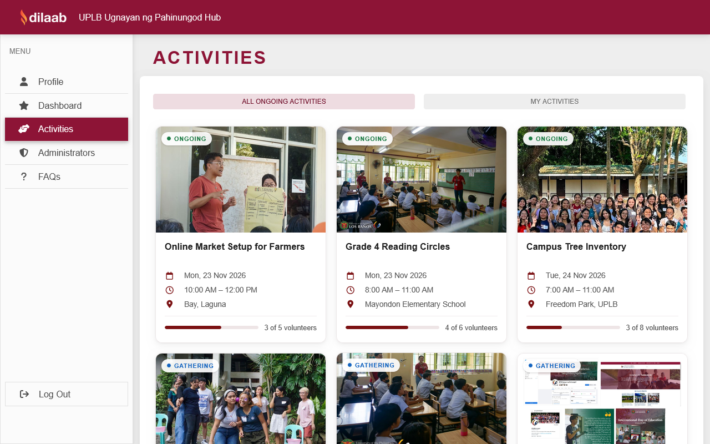
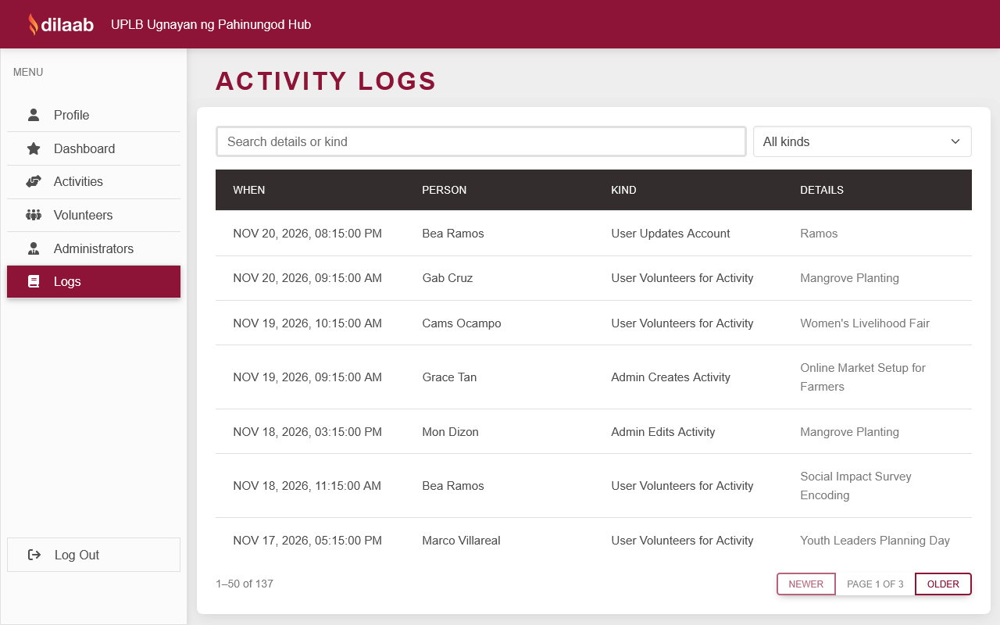

Undergraduate research · full-stack web app
Volunteer Management System
A web app for UPLB Ugnayan ng Pahinungod, the university's volunteer service program. Volunteers sign up, join activities and get recommendations; administrators manage activities, announcements and volunteer records in one place.
- Recommendations that fit: content-based filtering with cosine similarity matches volunteers and activities by skills, program interests and class schedule.
- Rated by real users: an average System Usability Scale score of 86.6 out of 100 from 35 respondents.
- A demo with no server: the live demo runs the real Express routes and controllers in the browser over a MongoDB stand-in, so the backend's 35 tests also pass against it.
JavaScriptReactNode.jsExpressMongoDBAWS S3Vite

